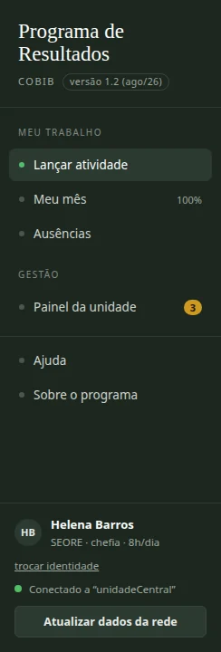
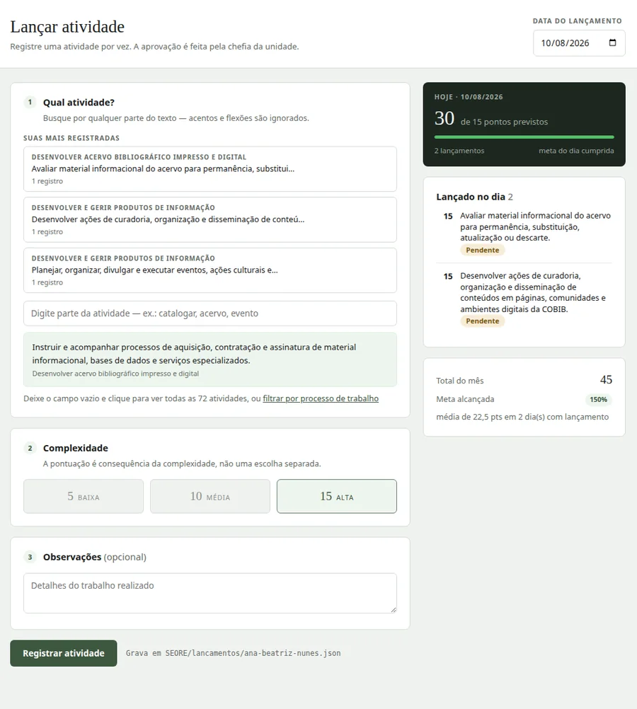
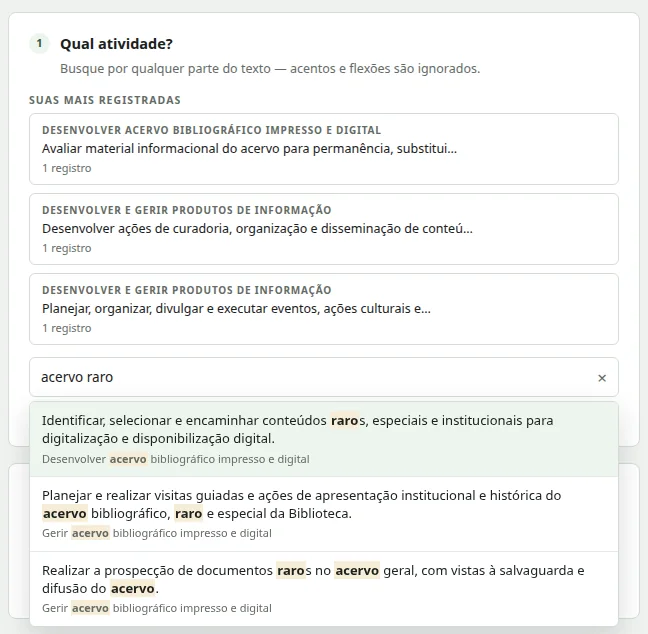
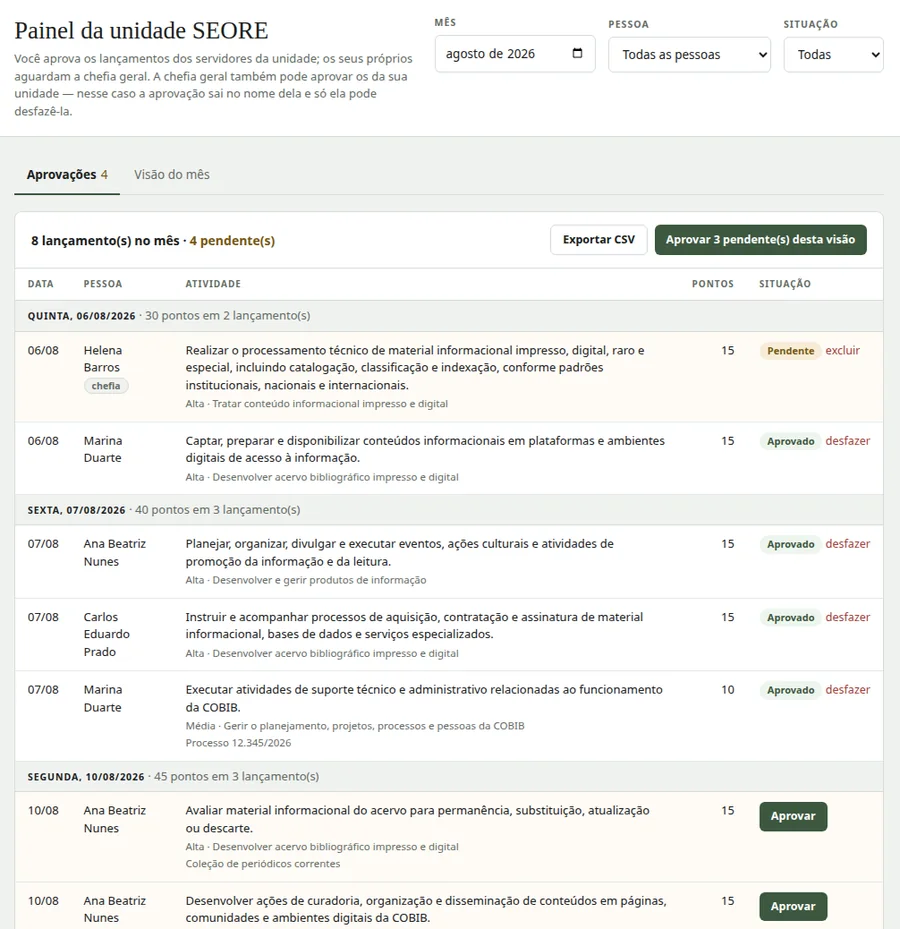

Quem é você?
Duas etapas, uma vez só por computador. Depois disso a tela abre direto no lançamento.
Pasta da rede
Conecte a pasta central. Somente pastas oficializadas pelo administrador são aceitas; a escolha fica memorizada neste computador.
Identificação
O papel e a unidade vêm da configuração central — quem aprova quem é determinado pelo papel, não pela tela.
Identidade confirmada e travada para esta sessão.
Lançar atividade
Qual atividade?
Busque por qualquer parte do texto — acentos e flexões são ignorados.
Deixe o campo vazio e clique para ver todas as … atividades, ou filtrar por processo de trabalho
Complexidade
A pontuação é consequência da complexidade, não uma escolha separada.
Observações (opcional)
Lançado no dia
Nada lançado nesta data ainda.
Meu mês
Média dos dias em que você lançou. Dias sem lançamento ficam fora do cálculo — o número mede intensidade, não assiduidade.
Média dos dias em que você lançou. Dias sem lançamento e dias de ausência ficam fora do cálculo — o número mede intensidade, não assiduidade.
Meus lançamentos
| Data | Atividade | Pontos | Situação | Ações |
|---|
Nenhum lançamento no mês selecionado.
Ausências
Períodos de afastamento. Não valem pontos e não passam por aprovação — servem para tirar da conta da meta os dias em que não havia como trabalhar.
Registrar período
Períodos sobrepostos são recusados: contariam o mesmo dia duas vezes. A contagem é em dias corridos, incluindo as duas pontas.
Minhas ausências
| Tipo | Período | Dias | Observações | Ações |
|---|
Nenhuma ausência registrada.
Painel
| Data | Pessoa | Atividade | Pontos | Situação |
|---|
Nenhum lançamento com os filtros atuais.
Quanto mais escura a célula, maior o número de atividades. O número aparece dentro de cada célula.
Resumo por pessoa
Ausências no mês
| Pessoa | Unidade | Tipo | Período | Dias | Observações | Ações |
|---|
Nenhuma ausência com os filtros atuais.
Administração
Alterações aqui são gravadas no config.json da pasta central e
valem para todos ao recarregarem os dados. Processos e atividades continuam
no catalogo.js do aplicativo.
Pasta oficial
—
Seções em avaliação
Partes do programa que aguardam decisão da gestão. Ficam ocultas para todo mundo enquanto isso; ligá-las aqui vale para todos assim que recarregarem os dados da rede. O que já foi registrado continua guardado nos arquivos das pessoas, mesmo com a seção desligada.
Com a seção desligada, ninguém registra nem consulta ausências pela tela. As ausências já gravadas continuam saindo da conta do percentual da meta — o cálculo não mudou.
Senhas
| Pessoa | Papel · Unidade | Senha | Ações |
|---|
Catálogo de unidades e pessoas
Edite o JSON abaixo e salve. Atenção: renomear uma pessoa desvincula a senha e o arquivo de lançamentos do nome antigo.
Ajuda
O que é o programa, quem faz o quê e como usar no dia a dia. Esta tela funciona sem internet, como o resto do aplicativo.
O que é o Programa de Resultados
Para que ele serve — e para que ele não serve.
É onde cada pessoa registra, no dia em que faz, as atividades que executou. Cada atividade vem de um catálogo comum a todas as unidades e vale pontos conforme a sua complexidade: baixa 5, média 10, alta 15. A chefia confere e aprova o que foi lançado.
O objetivo é enxergar o trabalho da COBIB pelo que ele produz — quais processos consomem esforço, de que natureza é esse esforço e como ele se distribui entre as equipes.
O que ele não é: não é controle de ponto nem de frequência. Ele não sabe a que horas você chegou nem quantos dias trabalhou; sabe apenas o que foi registrado. Um dia sem lançamento não é lido como dia sem trabalho — é um dia sobre o qual o sistema nada sabe.
Quem é quem
O papel vem da configuração central, e não de uma escolha na tela: é ele que define quem aprova o quê.
| Papel | Registra? | Aprova | É aprovado por |
|---|---|---|---|
| Servidor(a) | Sim | — | A chefia da unidade |
| Chefia da unidade | Sim | Os servidores da sua unidade | A chefia geral |
| Chefia geral | Sim | Qualquer lançamento | Ela mesma |
| Administrador | Não | — (não aprova) | — |
Duas regras que costumam gerar dúvida
- A chefia de unidade não aprova a si mesma: os lançamentos dela ficam pendentes até a chefia geral agir.
- Quem aprovou é quem pode desfazer. Se a chefia geral aprovou um lançamento seu, a chefia da unidade não consegue desmarcá-lo — e vice-versa. A tela avisa quando isso acontece, em vez de fingir que funcionou.
Como a tela se organiza
Uma tela de cada vez, escolhida na barra escura à esquerda.
A barra separa o que você faz do que você fiscaliza. Quem não fiscaliza nada vê só o primeiro grupo:
- Lançar atividade — o registro do dia.
- Meu mês — seus lançamentos, seus pontos e a meta alcançada.
- Ausências — períodos de afastamento.
- Painel (chefias) — aprovar e analisar o mês.
- Painel (chefias) — aprovar, analisar o mês e conferir ausências.
Os números ao lado dos itens dizem se vale entrar: o percentual em "Meu mês" e a quantidade de lançamentos esperando você, no painel.

Como lançar uma atividade
Três passos numerados, uma atividade por vez.
- Confira a data, no alto à direita. Ela vem com o dia de hoje, mas pode ser mudada para registrar um dia anterior.
- Passo 1 — qual atividade. Busque pelo texto ou use um dos atalhos de "Suas mais registradas".
- Passo 2 — complexidade. Só ficam disponíveis as complexidades que aquela atividade admite; quando ela admite uma só, já vem marcada. A pontuação é consequência da complexidade, não uma escolha à parte.
- Passo 3 — observações (opcional): o número do processo, o título da obra, o que ajudar a lembrar depois.
Ao clicar em Registrar atividade abre-se um recibo com o que foi gravado, que você fecha à mão. À direita, a coluna mostra na hora quanto já foi lançado no dia e quanto falta para a meta.
Abaixo do botão aparece o arquivo em que aquilo vai ser gravado. Você só escreve no seu próprio arquivo — é assim que duas pessoas nunca atrapalham o registro uma da outra.

Como achar a atividade certa
Não é preciso saber a que processo de trabalho ela pertence.
- Digite qualquer parte do texto — "catalogar", "acervo raro", "evento". Vários termos podem ser digitados em qualquer ordem.
- Acentos e flexões são ignorados: quem digita "catalogar" encontra "catalogação"; "indexar" encontra "indexação".
- Deixe o campo vazio e clique para percorrer a lista inteira, em ordem alfabética.
- Pelo teclado: setas para percorrer, Enter para escolher, Esc para fechar.
- Se preferir partir do processo de trabalho, use o link filtrar por processo, abaixo do campo.
Ao escolher, o texto completo da atividade fica visível antes de registrar — nada de texto cortado.
Se nada aparecer, tente outra palavra: talvez o catálogo chame a mesma tarefa por outro nome. Faltando a atividade no catálogo, fale com a chefia — quem edita o catálogo é a administração.

O que a meta mede
Ausências, e o que a meta mede
O número mais fácil de ler errado no programa.
Dois pontos que costumam ser lidos errado.
Ausências
Férias, licenças, banco de horas e abonos são registrados como período — primeiro e último dia —, na tela Ausências. Não valem pontos e não passam por aprovação. Servem para tirar da conta da meta os dias em que não havia como trabalhar.
O percentual da meta
A meta é por dia trabalhado: 15 pontos para quem cumpre 8 horas, 11 para quem cumpre 6. O percentual é a média apenas dos dias em que você lançou alguma coisa; dias sem lançamento ficam fora do cálculo.
A meta é por dia trabalhado: 15 pontos para quem cumpre 8 horas, 11 para quem cumpre 6. O percentual é a média apenas dos dias em que você lançou alguma coisa; dias sem lançamento e dias de ausência ficam fora do cálculo.
Por isso ele mede intensidade, não assiduidade: quem lançou em 2 dias e bateu a meta nos 2 aparece com 100%, igual a quem lançou em 20. Para julgar volume, olhe os pontos e o número de dias, que estão sempre ao lado do percentual.
Para as chefias: aprovar
A aba Aprovações, no painel, é o caminho normal.
- Cada linha traz um botão Aprovar. Depois de aprovado, o botão dá lugar à etiqueta verde e a um desfazer.
- Aprovar pendentes aprova de uma vez tudo o que está na tela, respeitando os filtros de mês, pessoa e situação.
- Os lançamentos aparecem agrupados por dia, com o total do dia na faixa que abre o grupo.
- A outra aba, visão do mês, traz os indicadores, os gráficos e o resumo por pessoa.
- As outras duas abas mostram a visão do mês (indicadores, gráficos e resumo por pessoa) e as ausências da sua alçada.
Os dados que você vê são os que estavam na pasta da rede quando a tela foi aberta. Para ver o que outras pessoas gravaram depois disso, use Atualizar dados da rede, no pé da barra à esquerda.

Quando algo não funciona
- "Pasta não conectada" — clique em Conectar pasta e escolha a pasta central da rede. A escolha fica memorizada neste computador; nas próximas vezes basta reconectar.
- Seu nome não aparece na lista — a pasta pode ainda não ter sido oficializada pelo administrador, ou seu nome não está no cadastro. Fale com a administração.
- O programa recusou gravar dizendo que um arquivo está ilegível — isso é proposital: gravar por cima apagaria os lançamentos já registrados. Leve o nome do arquivo ao administrador.
- Um lançamento errado pode ser excluído por você mesmo enquanto estiver pendente. Depois de aprovado, só a administração consegue excluí-lo.
- O programa funciona apenas no Chrome e no Edge: são os navegadores que permitem gravar direto na pasta da rede.